OMG, what did we build?
Recovering from the hangover of application success

OMG
Rick Bradley
Principal Engineer, Puppet Labs
github.com/rick
Lives
(past and otherwise)
Spent a couple of years trying to rewrite a large clinical system.
This looked a lot like "green field" work.
It totally wasn't.
"Rewrites" are a messy thing, and quite possibly impossible at any non-trivial scale.
The project was a failure.
I mean, I learned a lot.
But, just, fire and craters.
Fortunately, business is often like diplomacy:
There are no "failures", just "frank exchanges of views" and "going back to the table".
Spent 5 years in a 3-person consultancy.
We thought we were going to do "green field" work.
We ended up mostly doing app and team rescues.

Spent 2 1/2 years at GitHub.
We kind of thought we were going to do "green field" work. (§)
We ended up mostly doing app and team rescues.

That's a pretty consistent streak of cleaning up after people.
I found myself asking "what is the common factor here?"

Obviously, it's working on "apps".
I've been at Puppet Labs for just over a year.
Had no illusions that I would be doing "green field" work.
I am not working on "apps" now.
Currently revamping our processes and streamlining testing, delivery, etc.
i.e., "(something something) and team rescues"...
Fortunately these days I never find myself asking
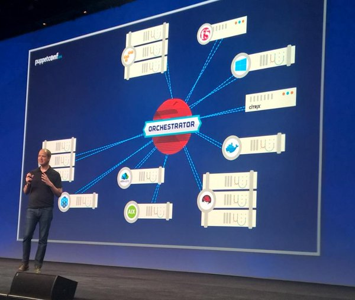
"OMG, Luke, what did you build?!"
"Rescues"
What does that even mean?
Something exists that is worth keeping around
(it's probably getting more and more valuable over time)
That something is in a far from ideal state
It's big enough that starting over isn't really an option
We are often inclined to believe that the "something" is the code we have built
Conway's Law
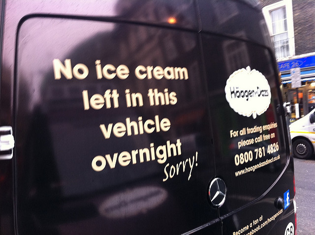
Awwwww. maaaan.
This is gonna be some tired old shit from Wikipedia isn't it?
Bear with me.
Organizations which design systems ... are constrained to produce designs which are copies of the communication structures of these organizations.
Blah blah blah
Yes, that's some tired old shit from Wikipedia.
If you have four groups working on a compiler, you'll get a 4-pass compiler.
More of the same, but for those people who like to talk about ALGOL
The structure of a problem reflects the structure of the organization that created it.
Now we're actually getting somewhere
Bringing it back to systems, I understand another variant
Every aspect of a system is a direct result of the interactions of the personalities who built that system.
The features of a system derive from the personalities who built it, acting during a time when those features made some sort of sense.
The haphazard construction of parts of a system result from a time where the people involved could do nothing but make those parts haphazard.
The connections and couplings between parts of a system reflect times when people worked simultaneously on those systems.
Changing a system is almost entirely about working with, working around, and changing the interactions between the people involved with the system.
How did we get here?
In the past we saw a need, and an opportunity
- There was a pervasive and persistent problem to be solved.
- People were willing to pay for a solution to that problem.
- And we were in a position to do it better than others.

We got into the market and had some early success
We built on that success and chased the market up

We ended up being one of those groups of people who were still left standing some time down the road
Impermanence

New shit has come to light
A "rescue" is taking a thing which excelled by a set of past values and transforming it to excel by a set of new values.
To get where we need to be, we need to do a few things...
Understand what is actually important, right now
(be willing to let go of the past)
Evaluate paths that move us towards our goals
Change the direction of the people and systems involved
Treating the need to change as a technical problem misses the fundamental reality, and will fail.
Not managing the technical aspects of needed change will also result in failure.
Prioritization

In the (Hollywood) Wild West

Gunslingers were much more likely to get shot

Than to live so long they could die of lung cancer
Eventually things get calmer
And a gunslinger who lived, might even settle down
At which point, lung cancer and emphysema become actual risks
That was totally a metaphor, y'all
We only have finite time, money, and people
So we must be judicious
Which problems do we solve?
Or, conversely, which risks do we minimize?
Case study: Abilities

June 2012
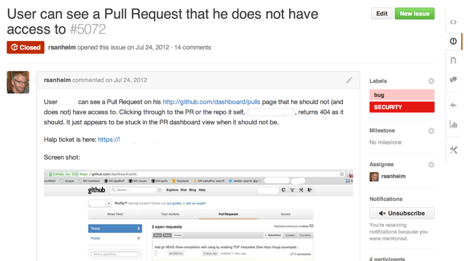
July 2012
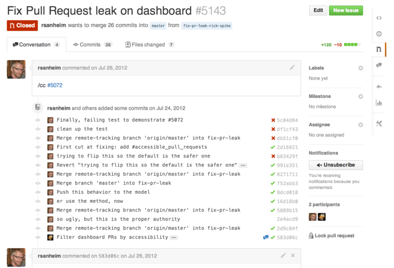
July 2012

July 2012
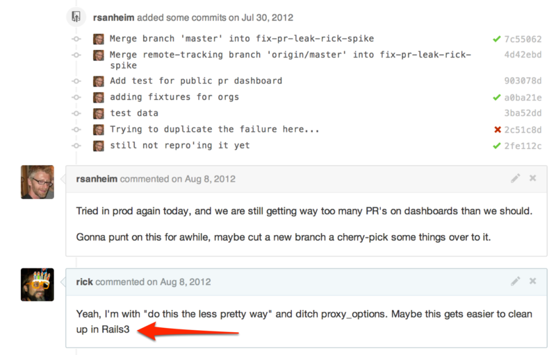
July 2012

August 2012
 September 2012
September 2012

September 2012
Acknowledging consensus and getting "buy-in"

September 2012

September 2012

November 2012
Incrementality
Building a consensus and prioritizing goal-driven change is critical
Without these, people will work at cross purposes and positive change will be hugely difficult
But there is a natural tension between "Second Systems", "Big Projects", "Company-wide Initiatives"
and the incremental, piecewise, exploratory, agile work needed to change a complex system.
I have spoken elsewhere about the different sizes of intentional change (see my "Long Refactorings" talk for details)
I will just summarize some techniques here
For the efforts worth doing
There are enough risks that success is unlikely
There are enough risks that success is unlikely
Avoid building a Second System™ -- the promised land of endless biscuits and gravy.
There are enough risks that success is unlikely
Aim to minimize costs.
There are enough risks that success is unlikely
Be iterative rather than Big
There are enough risks that success is unlikely
Aim to never be a roadblock.
There are enough risks that success is unlikely
Integrate constantly. Long-running branches are kryptonite.
Technical, um, techniques
Do small refactorings when changing a system
Be knowledgeable of the techniques in Martin Fowler's Refactoring book.
Refactorings at this scale are a commit or few,
inside the boundary of a larger pull request,
dedicated to a feature or a bugfix.
Your test suite is almost certainly insufficient to support large changes
If your test suite is sufficient to support large changes
You squandered resources at some point
Drive change via tests
Increase test coverage as you make changes
"Characterize" behaviors before changing them

Work to be expert in the techniques Michael Feathers outlines:
characterization testing, refactoring to tests, sensing variables, etc.
There are different understandings of your world throughout your organization
Changing the system requires joint understanding
Develop and write down a shared language
Understand the boundaries between parts of the system

i.e., use Domain-Driven Design
The "Big Ball of Mud" architecture is fine
Any given initiative should focus on one thing
Don't be distracted by wide-ranging cleanup efforts
Don't be distracted by Cool™ New® Technologies¥
Always use off-the-shelf until you're backed into a corner
You're probably not backed into a corner. Stop it.
Larger efforts
Understand the goal
Introduce metrics as safeguards
Introduce metrics as approximations of the goal
Incrementally and iteratively refine the system towards optimizing those metrics

Use techniques like those from The Mikado Method to explore the feasibility of a significant system change

- Start with a goal
- Do the first small refactoring along the way
- See what breaks -- write down a graph node
- Repeat until no more dependencies
Oh, right. "abilities"
We had ongoing quality problems in an important part of the system
Repeated bugfixing did not improve quality significantly
High level feature changes roadblocked by this core subsystem
We had built enough consensus, tied to large initiatives, to move this forward
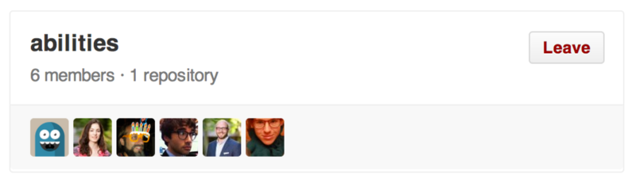

The Abilities project:
4 primary developers
795 Pull Requests and Issues from November 2012 until August 2014
Multiple iterations of complete new permissioning systems
Tight collaboration with ongoing Organization improvements
From a DDD perspective
The User / Organization / Team domains had never been properly understood, and were confusingly implemented
We were able to refine these concepts enough to move forward, and refined our shared understanding as necessary
From a DDD perspective
The domain concept of a Permission was also weakly understood, and its relationships to Repositories were often implicit
We brought forward the concept of a Capability as a first-class domain concept

November 2012
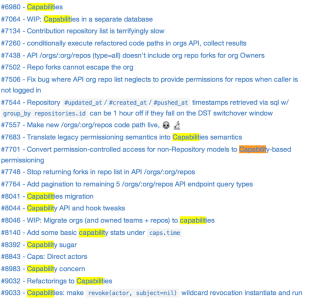
Capabilities lived as a new permissions system, side-by-side with existing permissions until August, 2013

Until Abilities came onto the scene.
Extensive performance testing led us to remodel capabilities so that granting operations were more performant
How did we know?

LOL

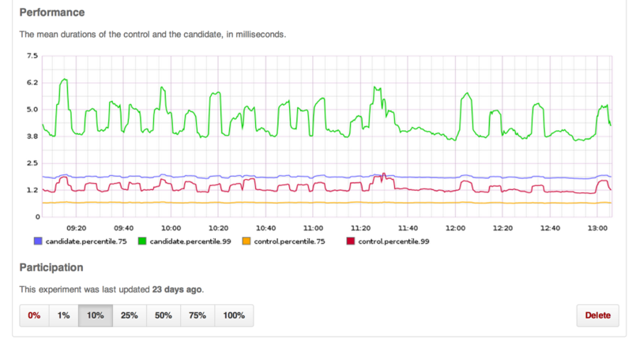
We built tools to let us (and anyone) run two code paths side-by-side.
Then performance data was published by instrumentation into our graphite cluster.

Don't Roadblock
Long-running branches are kryptonite.
We could land short-lived branches to "dark ship" new code.
With science and instrumentation tools we could gather real production measurements in a controlled fashion.
How to run two permission systems at the same time
One system is the source of all truth.
Have a migrator that creates the second system's data from the first.
The data for the second system is updated by actions on the first system.
Start with just a subset of users.
Trash the data and re-run the migrator.
Eventually never re-run the migrator.


Sometimes it's just hard to figure out if the code you are changing is even being used. Try to be 100% safe.

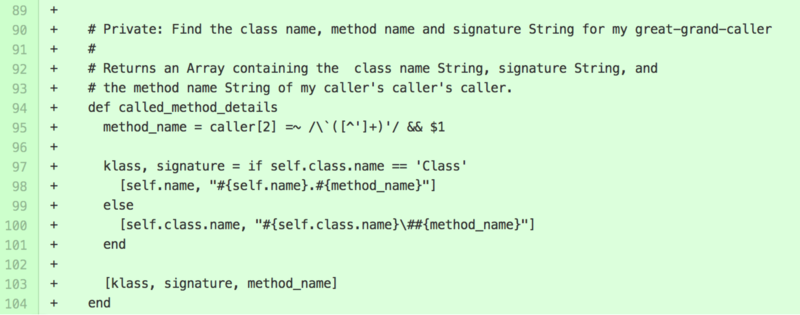
Just a glorified wrapper around ruby's caller method

... which can be put to holy or horrible uses
The project will ebb and flow
Always have enough side project work available that you can stay fresh and not get bogged down.
People will come and go (and often return) on a long project.
You will be at an impasse many times.
Rely on your team, and allow yourself to experiment with crazy things.
Your creativity is an asset.
Keeping a long project running
Keep your sense of humor.
Rely on your peoples.
Keep close.
Work-life balance is important.
Treat it as a marathon.
Take a vacation.
You actually can leave and go or do something else.
It's fine.
Setbacks
"Repository Networks" were all jacked up at the model level
Setbacks
"Repository Networks" were all jacked up at the model level
"plan owner" data was all shitty due to old bad job processes
Setbacks
"Repository Networks" were all jacked up at the model level
"plan owner" data was all shitty due to old bad job processes
Forking and collaborators were all sorts of stupid
Setbacks
You re-learn that you everything is connected
You end up having to fix way more things than you hoped
And you make some trade-offs and draw boundaries
Those of you familiar with DDD should be hearing bells ringing right now:
Bounded contexts!!!
Also, to reiterate an earlier point:
Your test suite is insufficient, even at 100% coverage
because your test suite can't account for your production data
and your whole history of bugs and bugfixes
Setbacks
So we wrote data quality scripts to find problems
We wrote transition scripts to clean up problems
We wrote throttling tools to make massive transitions never hurt production

It can be difficult or impossible to estimate significant changes to an ongoing system
Keep iterating
Continually communicate and re-negotiate next steps
Work on the most important blocker Right Now

Enterprise
Enterprise
Installed GitHub instances behind company firewalls
Back then were often 6 months behind github.com code base
Customers could be 300+ days behind last Enterprise release
We had almost zero visibility into installed versions and data quality at a customer's site
There were disabled and enabled github.com features on Enterprise
Enterprise
Data transitions for github.com were bundled with migrations for Enterprise upgrades
Database tables and ActiveRecord models persisted in github.com code until Enterprise was fully upgraded

Shipping
Shipping
Made abilities be the "source of truth" for read queries on teams, and orgs
Made abilities be the "source of truth" for repository read queries
Continue writing data to both permissions systems
Gradual removal of science experiment code

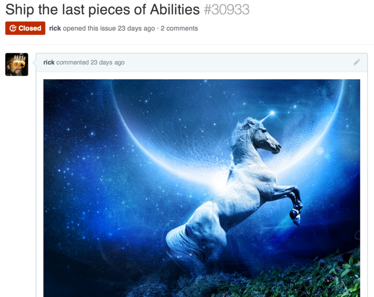


Other GitHub "scientist" ships
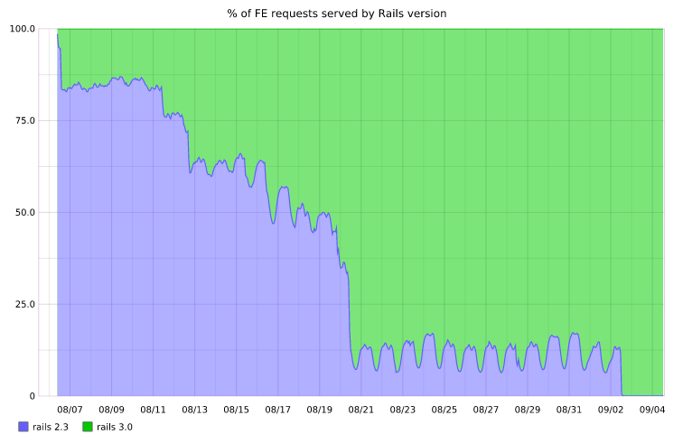
Rails 3
Yup. LOL.

GitRPC
Puppet Labs
Landed into Engineering as a "Principal Engineer"
Since all the engineering leads were already, well, leading, I got the opportunity to just roam around for a bit looking at how things work.
(Also, given that I had a history of being a "rescuer", pretty sure no one really wanted me on their team, hahaha)
So I hung out with the "Integration" team
Which is a team of heavy hitters charged with cleaning up whatever comes downstream from the rest of engineering and needs to work well in the released product.

Lots of bottlenecks and process failures
A more classic cousin of Conway's Law...
At some point QA, release engineering, and test automation were moved out into a separate division of Engineering
As a result, eventually developers did not own how their software was tested, how it was built, how it came together for release
Lots of things went "over the wall"
Feedback loops got long, developers were unempowered, product releases slowed down, frustration and finger-pointing escalated
My hazy understanding: Release engineering eventually got sick of fixing software thrown over the wall, and so the Integration team was born (closer to home, but still "over the fence")
In early 2014 there were technical attempts to fix problems, starting with the CI (test) system, but the efforts petered out with no significant change
In early 2015 there were "proof of concept" experiments (like we'd done at GitHub with permissioning systems), but they never moved forward
The fundamental problems were organizational
Interpersonal and team dynamics that persist over years
Self-reinforcing patterns of behavior that prevent real change from happening
Siloing of teams with thick walls preventing cross-cutting change
What now?
We moved testing pipeline definition into version control and made it more self-service
This only took a little concensus building, and the stability benefits were obvious
The side effect is that it makes developers more involved in the testing cycle (it's less over-the-wall)
We started a cross-functional group called The Pit Crew which brings in high-level engineers and test/release folks
It is HIGHLY transparent (more so than any other high-level group in the company)
Its mandate is to find the biggest bottlenecks in the development-to-release cycle and have actual teams prioritize those fixes
For this we had to build high-level consensus that these fixes were necessary to deliver product in the future (because this effort pushes back on product feature work!)
The proof of the commitment is that we already have big bottlenecks being tackled by real people
We are rolling out a long-term (1 year+) revamp of our CI/build/release infrastructure
We need to alleviate fundamental performance and capacity problems
We need to address deep UX problems, and to make it even more self-service
Building consensus
Working 100% in the open
Gathering feedback, and conducting group therapy
Naming the problems to be solved, and the techniques used to solve them
Avoiding the pitfalls of previous attempts
Building a roadmap, but keeping downstream intentionally un-detailed
Fighting Second System Syndrome™
Cutting through silos


Questions?
Image credits:
https://www.flickr.com/photos/jobless_photoman/7512657396/ octocats: the octodex and its creators https://www.flickr.com/photos/alastair-dunning/5250713135/ https://www.flickr.com/photos/37676753@N08/5117011208/ https://www.flickr.com/photos/affers/10562940573/ http://i.imgur.com/M7scT7C.jpg https://en.wikipedia.org/wiki/List_of_Old_West_gunfighters https://www.flickr.com/photos/steveallen/3324325493/ https://www.flickr.com/photos/pixbymaia/9662665997/ https://www.flickr.com/photos/usnavy/7070501561/
{kind=link}
Images origin unknown:
- "What the hell have you built."
- "What the hell did you build, Luke???"
- the drinking rooster
- everything else: The Internets